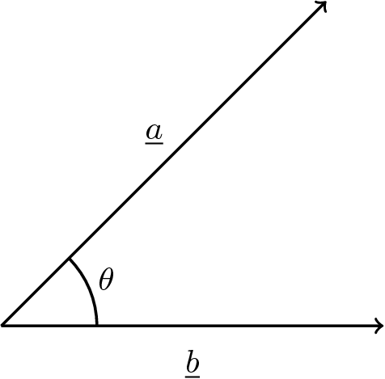
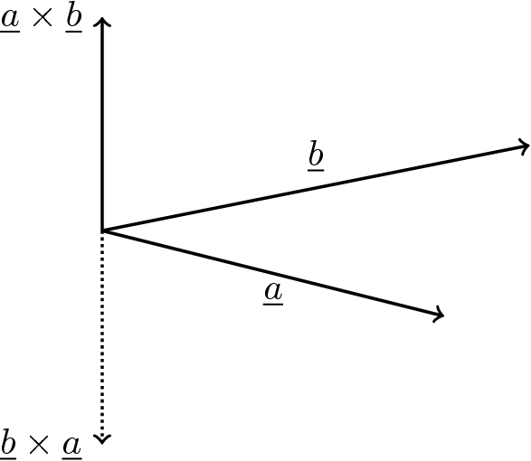
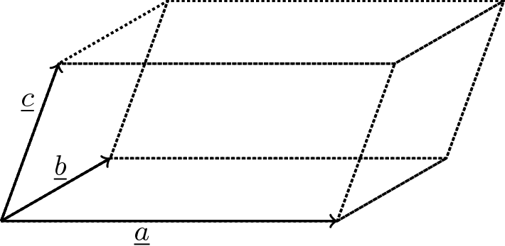

11.3 Vectors III
11.3.1 Multiplication of vectors
We know from studying mechanical systems that there are two possible situations when two vectors are multiplied together. A vector multiplied by a vector can result in a scalar quantity, for example, a force (vector) multiplied by the distance (vector) an object moves as a result of that force gives the amount of work (scalar) done by that force. A vector multiplied by a vector can also result in a vector quantity, for example a force (vector) multiplied by the perpendicular distance (vector) of that force from a given point, gives the moment (vector) of that force about the point. Since there may be two different forms multiplying vectors together, we can deduce that there are two different types of vector multiplication; one that results in a scalar quantity and one that results in a vector quantity.
11.3.2 The scalar or dot product
The scalar product of two vectors has a scalar quantity as its result.
The scalar product of two vectors \(\underline a\) and \(\underline b\) is defined as \[ \underline a \cdot\underline b = |\underline a||\underline b|\cos(\theta) \] where \(\theta\) is the angle between the two vectors as shown below
 If \(\underline a\) and \(\underline b\) are parallel then \(\theta = 0^\circ\) and \(\cos(\theta) = 1\), so \(\underline a \cdot\underline b = |\underline a||\underline b|\).
If \(\underline a\) and \(\underline b\) are perpendicular then \(\theta = 90^\circ\) and \(\cos(\theta) = 0\) so \(\underline a \cdot\underline b = 0\).
If \(\underline a\) and \(\underline b\) are given in terms of component vectors as \(\underline a = a_1\underline i + a_2\underline j + a_3\underline k\) and \(\underline b = b_1\underline i + b_2\underline j + b_3\underline k\) then \[ \underline a \cdot\underline b = a_1b_1 + a_2b_2 + a_3b_3. \]
Example 11.6 Find the scalar product of \(\underline a = 3\underline i + 2\underline j - 6\underline k\) and \(\underline b = -\underline i + 5\underline j - \underline k\).
Solution. \[ \underline a\cdot\underline b = a_1b_1 + a_2b_2 + a_3b_3 = (3)(-1)+(2)(5)+(-6)(-1) = -3+10+6=13. \] The scalar product of the vectors is 13.
Now since the scalar product is defined as \[ \underline a \cdot\underline b = |\underline a||\underline b| \cos(\theta)\tag{1} \] it gives us another way of finding the angle \(\theta\) between two vectors. We can re-arrange equation (1) to give \[ \cos(\theta) = \frac{\underline a\cdot\underline b}{|\underline a||\underline b|}.\tag{2} \]
Example 11.7 Using the vectors from the previous example, \(\underline a = 3\underline i + 2\underline j - 6\underline k\) and \(\underline b = -\underline i + 5\underline j - \underline k\), we found that \(\underline a\cdot\underline b = 13\). Also, \(|\underline a| = \sqrt{3^2+2^2+(-6)^2}=\sqrt{49}=7\) and \(|\underline b| = \sqrt{(-1)^2+5^2+(-1)^2} = \sqrt{27}\) so from equation (2) \[ \cos(\theta) = \frac{13}{7\sqrt{27}} = 0.3574 \] and thus \(\theta = \cos^{-1}(0.3574) = 69^\circ\).
Example 11.8 Find the unit vector perpendicular to the vector \(4\underline i+4\underline j-7\underline k\) and to the vector \(3\underline i - 2\underline j+\underline k\)
Solution. Let the vector which is perpendicular to the two given vectors be \(p\underline i + q\underline j + r\underline k\).
If the vectors are perpendicular then the scalar product is zero since the angle between them is \(90^\circ\) so \[ (4\underline i + 4\underline j - 7\underline k) \cdot (p\underline i + q\underline j + r\underline k) = 0\tag{1} \] and \[ (3\underline i - 2\underline j + \underline k) \cdot (p\underline i + q\underline j + r\underline k) = 0.\tag{2} \] Evaluating the scalar products (1) and (2) gives \[\begin{align*} 4p + 4q -7r& = 0\tag{3}\\ 3p - 2q + r& = 0\tag{4} \end{align*}\] We now solve equations (3) and (4) simultaneously \[\begin{align*} 4p + 4q - 7r& = 0&(3)\\ 6p - 4q + 2r& = 0 &(4 \times 2)\\ \end{align*}\] therefore by adding \(10p - 5r = 0\) so \[ r = 2p.\tag{5} \] Substituting into (4) gives \(3p - 2q + 2p = 0\) so \[ q = \frac52p.\tag{6} \] We may choose any value for \(p\) and, provided \(q\) and \(r\) have the relationships (5) and (6) with our chosen value, the vector will be perpendicular to the given vectors. We will choose \(p = 2\), then \(r= 4\) and \(q = 5\) so \[ p\underline i + q\underline j + r\underline k = 2\underline i + 5\underline j + 4\underline k. \] We were asked to find the unit vector. The magnitude of \(2\underline i + 5\underline j + 4\underline k = \sqrt{45} = 3\sqrt{5}\) so the unit vector perpendicular to the given vectors is \[ \frac{2}{3\sqrt{5}}\underline i+\frac{5}{3\sqrt{5}}\underline j+\frac{4}{3\sqrt{5}}\underline k. \]
11.3.3 The vector or cross product
The vector product of two vectors has as its result a vector.
The vector product is defined as \(\underline a \times\underline b = |\underline a||\underline b|\sin(\theta)\underline{\hat n}\).
That is to say that the magnitude of \(\underline a\times\underline b\) is \(|\underline a||\underline b|\sin(\theta)\) where \(\theta\) is the angle between \(\underline a\) and \(\underline b\) and, since it is a vector, it must also have a direction so \(\underline{\hat n}\) indicates the direction. For a vector product, \(\underline {\hat n}\) is always perpendicular to both \(\underline a\) and \(\underline b\). For \(\underline {\hat n}\) to be perpendicular to \(\underline a\) and \(\underline b\), it could either point in the direction shown below, or in the opposite direction, however for a vector product, \(\underline {\hat n}\) always forms a right-hand set of axes (like \(\underline i, \underline j\) and \(\underline k\)). The vector in the opposite direction (shown dotted) would be obtained from \(\underline b\times\underline a\).
 If \(\underline a\) and \(\underline b\) are parallel (i.e. \(\theta = 0\)), then since \(\sin(\theta) = 0, \underline a \times\underline b = {\underline 0}\).
If \(\underline a\) and \(\underline b\) are perpendicular (i.e. \(\theta = 90^\circ\)) then since \(\sin(90^\circ)= 1, \underline a \times\underline b = |\underline a||\underline b|\underline {\hat n}\)
If \(\underline a\) and \(\underline b\) are specified in terms of their component vectors, so that \(\underline a = a_1\underline i + a_2\underline j + a_3\underline k\) and \(\underline b = b_1\underline i + b_2\underline j + b_3\underline k\) then \[ \underline a \times\underline b = \left|\begin{array}{ccc}\underline i&\underline j&\underline k\\a_1&a_2&a_3\\b_1&b_2&b_3\\\end{array}\right|. \]
Example 11.9 Find the vector product of \(\underline a=3\underline i+2\underline j-6\underline k\) and \(\underline b=-\underline i + 5\underline j-\underline k\).
Solution. \[\begin{align*} \underline a \times\underline b& = \left|\begin{array}{ccc}\underline i&\underline j&\underline k\\3&2&-6\\-1&5&-1\\\end{array}\right|\\ &= \underline i((2)(-1)-(-6)(5))-\underline j((3)(-1)-(-6)(-1))+\underline k((3)(5)-(2)(-1))\\ &=28\underline i+9\underline j+17\underline k. \end{align*}\]
Example 11.10 Find a unit vector which is perpendicular to the vector \(4\underline i+4\underline j-7\underline k\) and to the vector \(3\underline i - 2\underline j+\underline k\).
Solution. From the definition of the vector product, a vector perpendicular to both these vectors is given by \[\begin{align*} (4\underline i+4\underline j-7\underline k) \times(3\underline i - 2\underline j+\underline k)& = \left|\begin{array}{ccc}\underline i&\underline j&\underline k\\4&4&-7\\3&-2&1\\\end{array}\right|\\ &= \underline i((4)(1)-(-7)(-2))\\ &\phantom{= }-\underline j((4)(1)-(-7)(3))\\ &\phantom{= }+\underline k((4)(-2)-(4)(3))\\ &=-10\underline i-25\underline j-20\underline k. \end{align*}\] So a unit vector perpendicular to both given vectors is \[ \frac{-10}{15\sqrt{5}}\underline i-\frac{25}{15\sqrt{5}}\underline j-\frac{20}{15\sqrt{5}}\underline k = \frac{-2}{3\sqrt{5}}\underline i-\frac{5}{3\sqrt{5}}\underline j-\frac{4}{3\sqrt{5}}\underline k. \]
11.3.4 The scalar triple product
If we have three vectors \(\underline a, \underline b\) and \(\underline c\) then the scalar triple product of those vectors is defined as \(\underline a \cdot(\underline b\times\underline c)\).
Note that the vector product must be evaluated first, then the scalar product.
The scalar triple product gives the volume of a parallelepiped with edges defined by the vectors \(\underline a, \underline b\) and \(\underline c\).

Example 11.11 Find the volume of a parallelepiped with edges \(\underline a = 2\underline i - 3\underline j + 4\underline k, \underline b = \underline i + 2\underline j - \underline k\) and \(\underline c = 3\underline i - \underline j + \underline 2\).
Solution. The volume is given by \(\underline a \cdot(\underline b\times\underline c)\). First we calculate the vector product \[ \underline b \times\underline c = \left|\begin{array}{ccc}\underline i&\underline j&\underline k\\2&-3&4\\3&-1&2\\\end{array}\right| = 3\underline i-5\underline j-7\underline k. \] and now \[ \underline a \cdot(\underline b\times\underline c) = (2\underline i - 3\underline j + 4\underline k)\cdot(3\underline i-5\underline j-7\underline k) = -7. \] The volume is therefore \(7\) units (and the -ve sign tells us that the system was not right handed).
11.3.5 The vector triple product
If we have three vectors \(\underline a, \underline b\) and \(\underline c\) then the vector triple product of those vectors is defined as \[ \underline a \times (\underline b \times\underline c) \]
Example 11.12 Find the vector triple product \(\underline a \times (\underline b \times\underline c)\) where \(\underline a = 2\underline i - 3\underline j + 4\underline k, \underline b = \underline i + 2\underline j - \underline k\) and \(\underline c = 3\underline i - \underline j + \underline 2\).
Solution. From the previous example, \(\underline b \times\underline c = 3\underline i-5\underline j-7\underline k\). \[ \underline a \times (\underline b \times\underline c) = \left|\begin{array}{ccc}\underline i&\underline j&\underline k\\2&-3&4\\3&-5&7\end{array}\right| = 41\underline i+26\underline j-\underline k \]